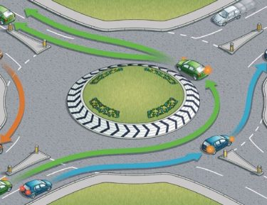

ROTATORIE
Corretta circolazione
Prima di immettersi nella rotatoria è opportuno moderare la velocità ed usare la massima prudenza, controllando nel contempo il comportamento degli altri utenti.
Vale la regola generale di dare la precedenza a destra; quindi bisogna dare la precedenza ai veicoli provenienti da sinistra solo se vi è il segnale "DARE PRECEDENZA", in tal caso la circolazione viene disciplinata in modo che i veicoli in entrata diano la precedenza a quelli già circolanti nell'anello.
All’interno della rotatoria non è consentito muoversi in retromarcia o effettuare manovre di sorpasso né da destra né da sinistra.
I veicoli che non devono svoltare alla prima traversa a destra non hanno l’obbligo di tenersi sulla corsia interna.
